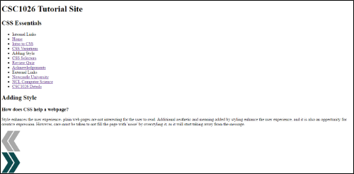

Style enhances the user experience- plain web pages are not interesting for the user to read. Additional aesthetic and meaning added by styling enhance the user experience, and it is also an oppertunity for creative expression. However, care must be taken to not fill the page with 'noise' by overstyling it, as it will start taking away from the message.
 What this page looks like without CSS styling- not very pretty nor easy to look at!
Style sheets specify formatting rules, and all style sheets have the same syntax. No matter the way the CSS styling is applied, its rules are written in the same way. Rules consist of selectors and declarations; selectors indentify the HTML patterns to apply the styling to, and declarations determine what should be done.
selector { style-property : value; }
Multiple declarations are seperated by a semi colon, and all declarations are always included in {...}.
The different types of styling are as follows, in order of most to least specfic.
CSS styling can be added to a line of HTML inside its tags as shown below. This is the most specific type of styling, and can be useful in overcoming a specifity issue.
<p style="background-color:blue">Hello</p>
However inline styling should be avoided if possible, as it mixes style and structure which is aimed to be avoided with HTML and CSS existing. You also have to define the style over and over should you want to use it outside of just that specific line.
Due to its high specificity inline styling is good for 'quick fixes' to styling. A style rule can be applied inline in the HTML to quickly and immediately add the style.
The use of inline styling is also useful on smaller websites such as blogs. The lack of necessary extra files to host (such as with external style sheets) helps the user and the service provider.
Similarly, use of inline styling lowers the number of HTTP requests that have to be made, so the site will also load faster.
Because they are the most specific type of styling, any inline style rules could override other CSS that were not wanted or meant to be overridden.
To apply a style rule to every element this way, the style rule must be added to every tag. So to style every paragraph the same way, the same inline rule would have to be applied to every paragraph tag. This creates a lot of work both in writing and maintaining the site.
Only the 'direct' state of the element can be styled inline. Styling a link inline would only allow you to style the link itself; not any other attributes such as when it is hovered over or when it is visited.
For internal styling, the CSS rules are included in the HTML markup document in style tags, included in the head of the page. This is one degree of separation, and is acceptable for a one page site as it can define CSS styling for an entire page.
<style type="text/css"> p { font-style:italic }</style>
This way the style for an entire page can be easily changed even after the whole page has been written and structured.
Other states ('pseudo' elements) of elements can be styled with internal styling. For example it would be possible to style the visited and hover appearances of a link, as well as just the link itself.
Internal styles do not need to be applied to every instance of the element, saving designing and maintainance time.
Internal styling cannot be used without repeating the same rules over and over if you want to apply the styling to multiple webpages at once.
Webpages with internal CSS styling also have larger file sizes, due to extending the length of the source of the page with all the included rules.
External style sheets are stored in separate .css files, which are then linked to the document they are to be applied to in style tags.
<link rel="stylesheet" type="text/css" href="mystyle.css"/>
Multiple sheets can be linked to a page.
External CSS sheets can define the style for entire websites, and you only need to link the sheet in the page that is to be styled.
Styling can be controlled for multiple documents at once, as multiple webpages can easily and quickly import the same sheet and have all its styling applied.
Similarly site maintenance and design is made simpler as to change the styling across all pages applying it, only one document needs to be edited.
As the CSS in this case is a seperate file, the site requires an extra download to be able to import the styling. Not only does this take up more file space and download time, but if somehow left out of the download no styling will be applied at all.
External style sheets can also be considered unwieldly for small numbers of style rules, and not particularly necessary.
How an element actually appears on the webpage is a composite of all the appropriate style rules attributed to it, and links to CSS Selectors.
The more specific a rule is, the greater priority its declarations have.